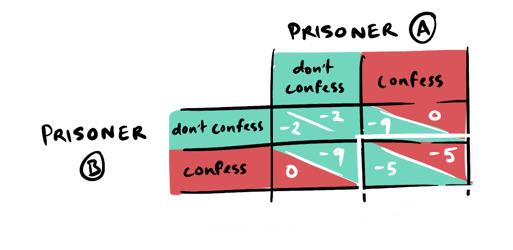

Continuing on from the idea of future “punishment” affecting strategy profiles that ended my Subgame Purrrfection post, let's explore repeated games—both finite and infinite. The idea of cooperation in individual rounds due to credible threats of “punishment” by the opponent in the future as well as individual gain from mutual cooperation seems strong, but doesn't uniformly apply to all classes of repeated games. It may seem like there's no difference in strategy analysis between finitely repeated and infinitely repeated games—after all, they're both “repeated”, right? Wrong. To understand why, we need to explore…
In finitely repeated games, the principle of backward induction can define strategies, particularly in games like the prisoner's dilemma with a single Nash Equilibrium.
Imagine you're playing this game 20 times, and are on the 20th round. What would you do? Since there are no future rounds, your answer should be the strictly dominant strategy; confess. Knowing your rational opponent will confess in the 20th round, the threat of punishment and potential future cooperation in the 19th round is no longer credible. Extrapolating this repeatedly from 19 to 18, 18 to 17 and so on up to round 1, we can see that the rational strategy would be confessing throughout. This is the idea of backward induction, applicable to finitely repeated games.
But surely communication between prisoners would ensure mutual cooperation and negate this theory? This introduces the concept of renegotiation, which destroys the credibility of future punishments/rewards. Imagine you've agreed to cooperate in the next round. This would incentivise defection today for any rational player, as the threat of future punishment has vanished.
Barring renegotiation, does backward induction apply to all finitely repeated games? When a game has multiple Nash equilibria or mixed Nash equilibria, this could change… but that's a topic for another day. Moving on to…
Let's revisit the prisoner's dilemma with a small twist—instead of 20 rounds, you now play infinitely. This means we do not know precisely when the game will end—the threat of punishments and rewards for mutual cooperation seem a lot more credible now, don't they? More specifically, we can analyze strategy viability through the following simple condition:
If the reward for deviating today is less than the difference between the reward for cooperating and the punishment for deviating in the future, then cooperation is in our interests (YaleCourses, 2008).
So, given the prisoner's dilemma payoff matrix, continual defection (confession) by both parties, over time, has a greater accumulative negative payoff than repeated cooperation; in this case, future rewards for cooperation outweigh the reward for defection today. However…
What do we really consider as an “infinite” game? Osborne and Rubinstein perfectly encapsulate this notion in their book “A Course in Game Theory”. They say this classification depends on the reality “players perceive”. Human perception varies from person to person, depending on a variety of factors—our patience, how much we value future outcomes relative to the present, etc. Their observation that since life is finite, every game is in theory finite intrigued me—however, since we play some games so often, their “horizon” approaches slowly and we perceive them as infinite.

Going back to the prisoner's dilemma—if I said the game is repeated 500,000 times, would you work your way through backward induction 500,000 times? Probably not. Instead, you would view it as an infinitely repeated game up until a certain point (depending on your personal preference), after which the horizon would be near enough to model as a finitely repeated game. What about human life? Doesn't our mortality make every game, in theory, finite? Once again, we consider the frequency of interactions and how far the “horizon” is. As Osborne and Rubinstein eloquently put it, we “may ignore the existence of the horizon entirely until its arrival is imminent”.
What does this mean for us? It means that in games where we perceive the horizon as infinite, we are more likely to cooperate due to the credible threat of future rewards/punishments. In games where we perceive the horizon as finite, we are more likely to defect due to the lack of credible threats. How we determine the weight we place on future consequences is the subject of the next post when explore discount factor. I personally loved the idea of changing strategies within the same game due to human nature. What do you think? Have your say in the comments.